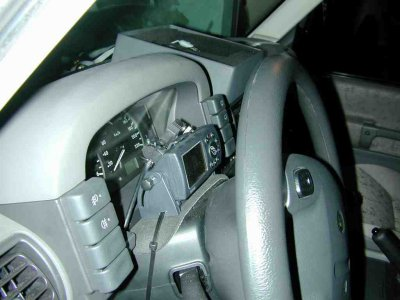
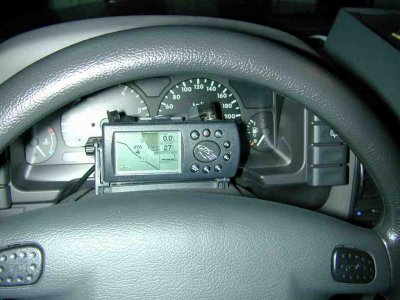
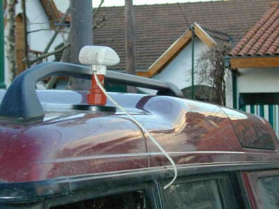
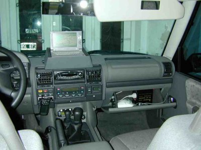
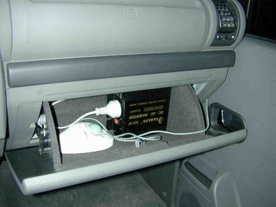
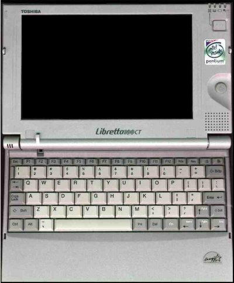

Instalación efectuada en un Land Rover Discovery Series II Td5.
La instalación consta de un Garmin GPS III+ con antena externa montada sobre el techo del vehículo. El receptor de GPS va conectado a una computadora Toshiba Libretto 110 CT. En la computadora indicada se corre el software OziExplorer, que recibe la información NMEA del GPS y va indicando en la pantalla, sobre el mapa de la zona, la posición del vehículo con una actualización a razón de una vez por segundo. El software también va almacenando y mostrando en pantalla el recorrido efectuado.
Preparación del vehículo
La única preparación del vehículo consistió en traer una línea de alimentación directamente desde la batería hasta la zona del torpedo para alimentar el GPS y la computadora sin interrupciones ni interferencias con otras instalaciones del vehículo.
Instalación del GPS
|  | Utilicé un Garmin GPSIII+ por su pequeño tamaño y la posibilidad de ubicarlo en forma horizontal, minimizando la superficie ocupada en el tablero del auto. En realidad para el uso con Moving Map no es ni siquiera necesario que el GPS esté a la vista ya que su principal utilización es la de captar las señales satelitales y transferir dicha información a la computadora.No obstante lo dicho, el GPS se utiliza mas allá de su función de receptor, para observar información complementaria en su pantalla y utilizar varias de sus características propias. Para el montaje del gps utilicé un precinto de plástico para fijarlo a la columna de dirección, entre el volante y el tablero de instrumentos. |
Intercalé una almohadilla esponjosa entre la columna de dirección
y el gps, para hacer mas efectiva la fijación y minimizar las vibraciones.
|  | El gps va montado sobre un soporte propio de Garmin, que permite variar
el ángulo de la pantalla. Se observa en la parte posterior del gps
la salida de los cables conectores a la antena, a la alimentación
y al puerto serial de la computadora.
La ubicación no es la ideal ya que tiene algunas ventajas y otras desventajas. La principales ventajas son su visibilidad, la facilidad de instalación y la no utilización de espacio del salpicadero. Tiene la desventaja de ocultar una parte de la información del tablero y se hace difícil acceder a sus botones con el vehículo en marcha. |
Instalación de la antena exterior
| Este es un procedimiento muy sencillo que consistió en pasar el cable cuyo extremo va conectado al gps, por debajo del tablero hasta el parante de la puerta delantera izquierda, luego hacia el exterior por la abertura de la puerta trasera izquierda y finalmente colocar la antena sobre el techo. La antena está montada sobre una base imantada del tipo de las que se usan para las antenas de radio. La idea de montarla sobre el techo fue la de asegurar la mejor recepción posible en cualquier condición de terreno. Realmente funciona muy bien. |  |
Instalación de la Notebook
De acuerdo a mi experiencia la clave para la instalación de la
notebook consiste en minimizar las vibraciones que sufra el conjunto. Para
ello la computadora debe ir montada sobre una superficie absorbente y mullida
que no transmita los golpes y las vibraciones del terreno, especialmente
cuando estamos en una superficie de ripio con ondulaciones de tipo serrucho.
|  | La base consiste en una caja de madera forrada interiormente por espuma
plástica, de la mas suave que conseguí.
El grosor de la capa de espuma no es inferior a 3 cm en ninguno de sus lados y en su base. La caja lleva por fuera un revestimiento vinílico similar al tapizado del vehículo para lograr una estética aceptable. En la cara de la caja que enfrenta al parabrisas van calados los agujeros que corresponden a la entrada de los cables que vinculan la notebook con el resto del equipamiento. Los cables son: una entrada serial proveniente del gps, una entrada de alimentación, proveniente de la fuente de alimentación y una entrada al puerto del mouse, para la conexión de un track ball. |
Alimentación de la Notebook

La notebook recibe alimentación a partir de un inversor de corriente
que transforma la entrada de 12V a 220V. Su capacidad es de 300 watios,
siendo mas que suficiente para la notebook y otras cosas. El inversor va
alojado en la guantera, fuera de la vista, y recibe alimentación
directamente de la batería, con su correspondiente fusible.
A la salida del inversor va conectada la fuente de alimentación del la notebook, como si fuera cualquier conexión domiciliaria.
También tengo alojado en la guantera el track ball, que reemplaza al mouse, y que utilizo en ocasiones especiales para comandar la notebook.
Esto también puede hacerse desde su propio mouse incorporado
a un lado de la pantalla.
Características de la Notebook
|  | La notebook es una Toshiba Libretto, la mas pequeña computadora
completa que existe en el mercado. Funciona bajo Windows 98 o NT y tiene
las siguientes capacidades.
Procesador Pentium 233 Mhz
|
Informacion adicional sobre los elementos empleados
GPS Garmin www.garmin.com
Toshiba Libretto: http://www.silverace.com/libretto/
Inversor de 12V a 220V: Comprado en Costanera 1, Buenos Aires
Software para Moving Map: OziExplorer www.oziexplorer.com